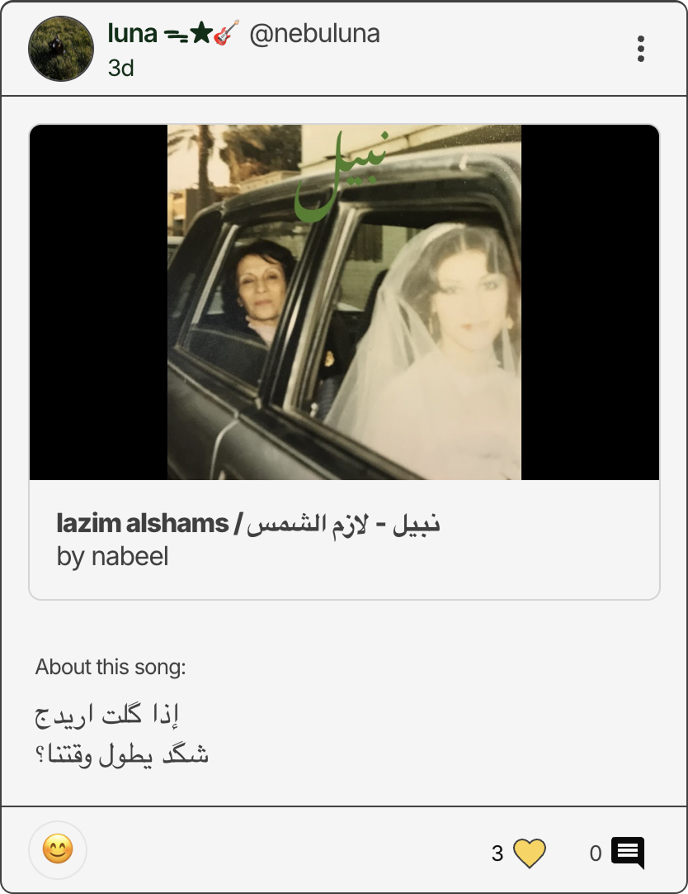
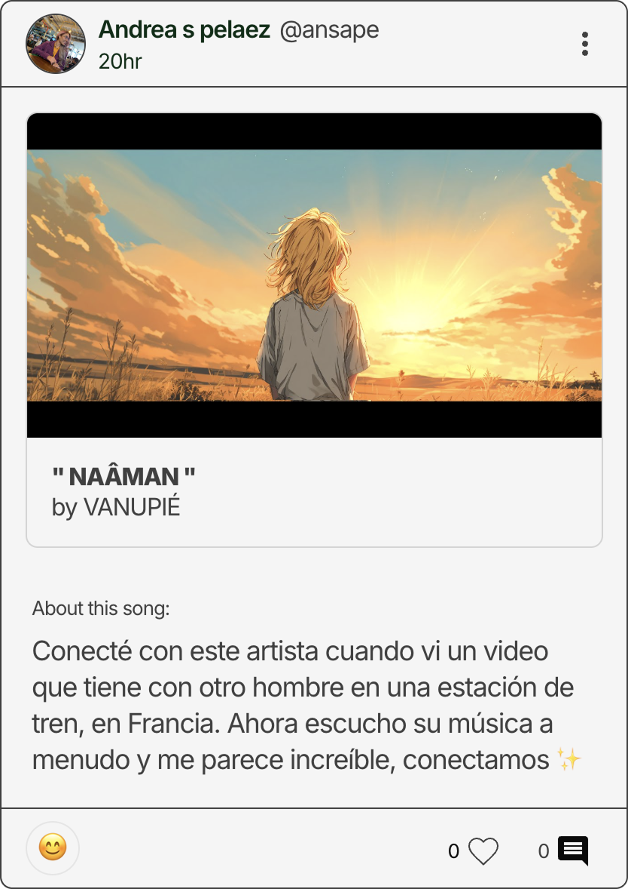
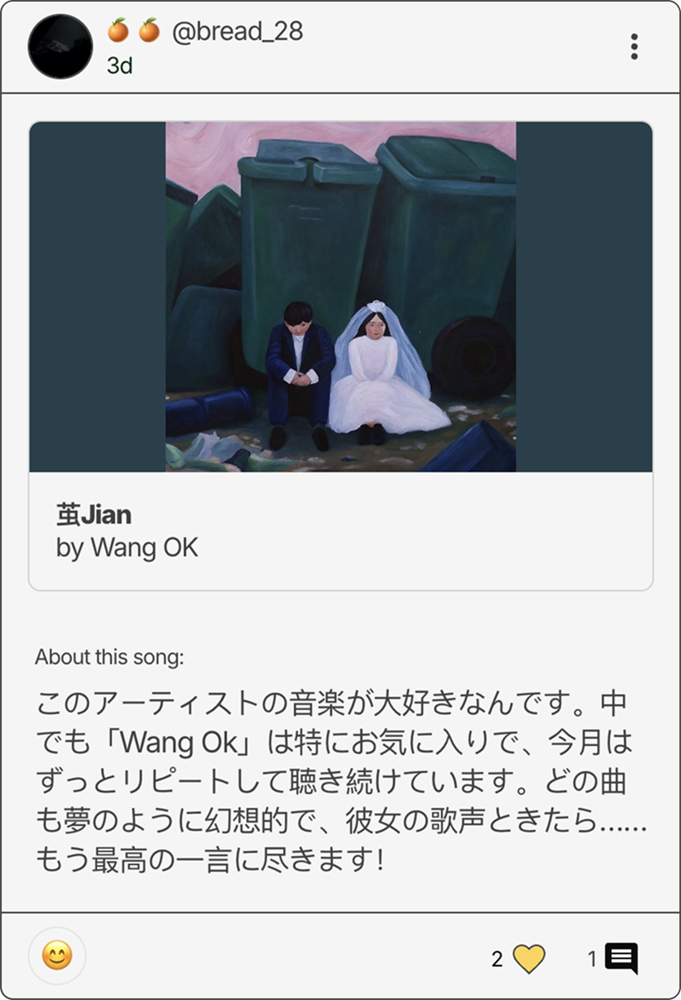
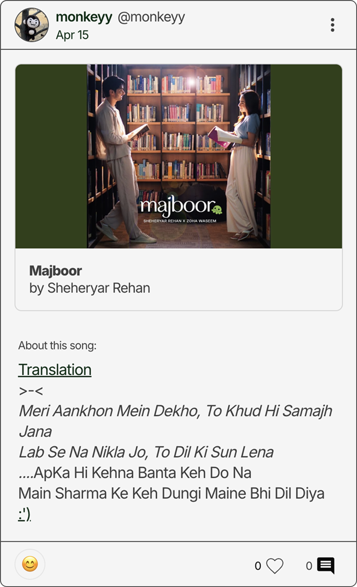

Case study / Good Song Club
A deliberate music platform in an age of infinite scroll
Good Song Club is a platform built around a single constraint: one song per person per day. No algorithm, no recommendations engine, no engagement tricks. Just a worldwide shared playlist that updates one entry at a time, as people post what their favorite songs.
Quick Info
Background
A few things to know before diving in.
1
The problem with music sharing
Streaming platforms optimise for volume. Social sharing on them produces listening activity, not recommendations. There was no dedicated place for the specific ritual of saying to someone: you have to hear this one song.
2
The window to build
A layoff in mid-2023 gave me an unexpected run of unstructured time. Instead of immediately job hunting, I used it to build something I'd been wanting to exist. Good Song Club launched in September 2023.
3
Two constraints as product philosophy
The platform runs on exactly two rules: only YouTube links are allowed, and each user can post one song per day. These aren't technical limitations — they're deliberate design decisions that define everything about how the community behaves.
4
One person, every surface
I designed and built the entire product alone: product strategy, visual design, front-end, back-end, and ongoing infrastructure. Two years in, I'm still the only person who has ever touched the codebase.
The itch

Sharing music online is hard. I wanted to make it easier.
The TikTokification of the internet has relegated music to the sidelines of social media. It disappears as an uncredited background sound, a decorative detail. I wanted to know what a space that foregrounded music might look like.
The bet
The best music discovery engine is still just one person saying: you have to hear this.
What I set out to build
A platform that gets out of the way and lets the music do the work
The product had to be frictionless to use and resistant to the dynamics that make social platforms feel exhausting. That meant making deliberate choices about what it would and wouldn't do, and holding those lines even as the user base grew.
The constraints I designed around
1
YouTube links only. Universal, free, accessible everywhere — no paywall, no region lock, no account required to listen.
2
One post per day. The constraint that makes each post mean something. You can't spam. You have to choose.
3
No algorithm. The feed is strictly chronological. No ranking, no boosting, no content that performs better than other content.
4
No engagement mechanics. No streak notifications, no features designed to manufacture habit.
5
Browse without an account. Anyone can listen before committing. Frictionless entry was non-negotiable — the first song someone hears has to earn the signup.
The build
Designing and building the whole thing, alone, in the open
Working without a team or a deadline changes how you make decisions. There's no ticket to close, no sprint to hit. Every design choice gets made on its own merits, and you live with the consequences directly — in your own product, with your own users.
The stack is React, Node.js, and Firebase. The design system I built is simple by design: a small set of components that prioritise the music over everything else. The product has one job, and the interface should make that job feel effortless.
The product
The moment it found its people
For a year it was quiet. Then one Instagram post changed everything.
For the first year, Good Song Club was a small thing — me, a handful of friends, and a slowly growing trickle of strangers who'd stumbled onto it. Then in October 2024, an Instagram account called Designteamofone featured it in a post about hidden corners of the internet. The response was immediate. Traffic spiked, new users flooded in from around the world, and server costs jumped fast enough to cause genuine anxiety for about 48 hours.
The community that arrived stayed. And they turned out to be exactly the kind of people the platform was built for: curious, generous about music, completely uninterested in performing taste for an audience.
Outcome
10,000 songs, a genuinely kind community, and an ongoing education in music I'd never have found alone.
By April 2026 the platform had crossed 10,000 songs posted — Brazilian boogie, experimental jazz, whatever's playing at a coffee shop in Seoul. The community is multilingual and scattered across continents, and in two-plus years it has managed to remain completely free of the toxicity that finds its way into most spaces where strangers gather online. I think the constraints are why. When every post costs something — even just a moment of consideration — people tend to mean it.
Site of Sites recognised it for excellence in UI design. I'm more proud that it still runs the way it was meant to: one song at a time, no algorithm, and a worldwide playlist that gets a little longer every day.



